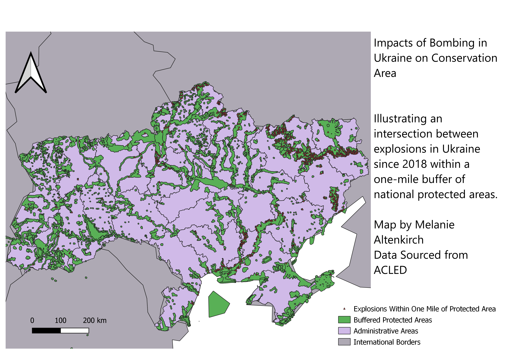

Homework 8: Using Geoprocessing Techniques to Understand Conservation Threats of Explosions in Ukraine
Through this project, I am seeking to answer the question of how bomb explosions in Ukraine may affect ecosystems in protected areas.
To begin, I imported and cleaned data surrounding explosion in Ukraine since 2018, with the goal of comparing it to conserved areas in nearby regions. I needed to begin with a Union, because my data came to me in three different files for the conservation areas. However, I wished to combine these into one layer, so used a union to do so.
I also immediately noticed that many of the explosion points were on the edges and surrounding areas of conserved areas, so I decided to begin my analysis by creating a buffer surrounding the conservation sites.
This would allow me to analyze not only the explosions directly in protected areas, but extend my analysis to points that would still affect the ecology within the protected areas.
I created a one-mile buffer surrounding the protected areas in Ukraine. Then, to focus only on the explosions that would affect conservation areas using this line of thinking, I used the tool of intersection.
Building an intersection between the buffer including and surrounding protected areas and the explosions in Ukraine, I was able to eliminate the excess data points the would not directly affect the protected areas.
My final map illustrates the explosions in protected areas, which can clue conservationists as to which areas to provide the most ecological help to.

My data comes from the following sources: